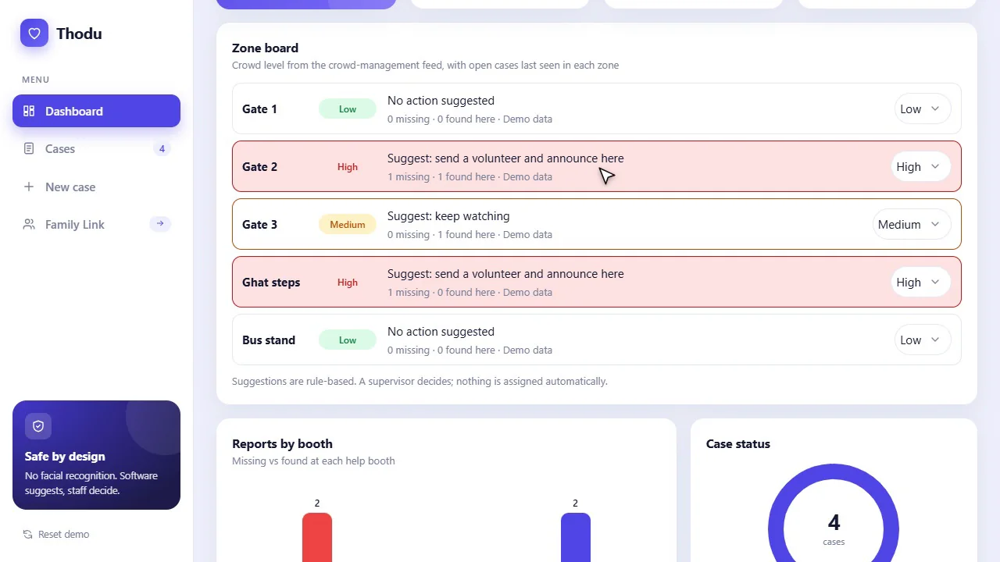
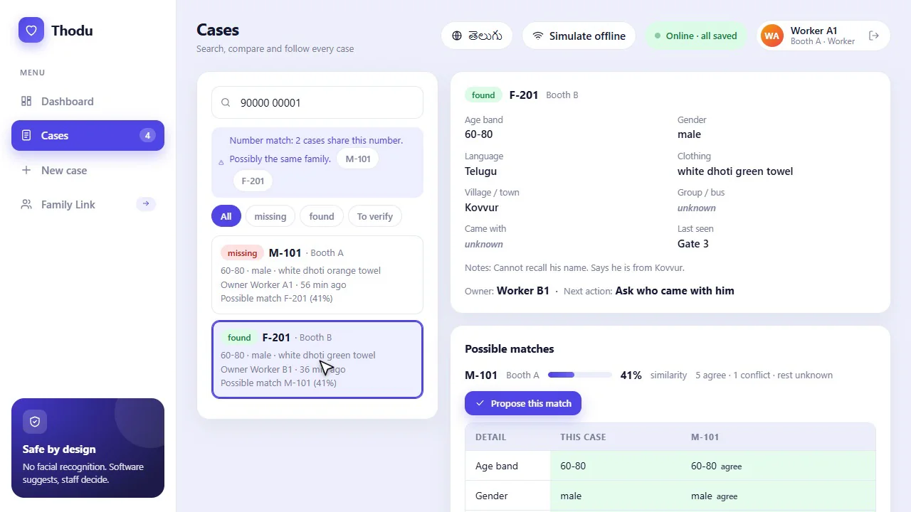
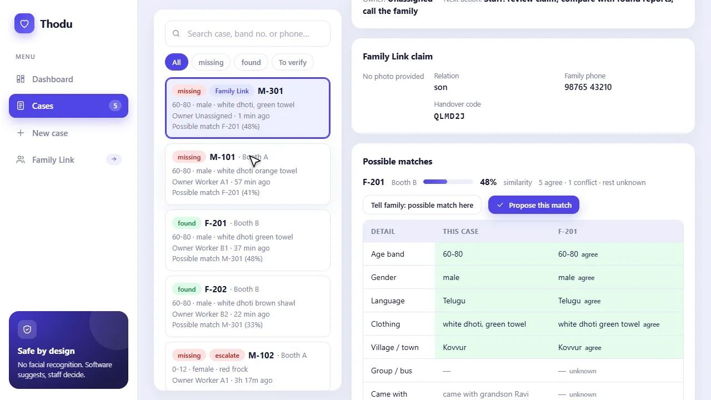
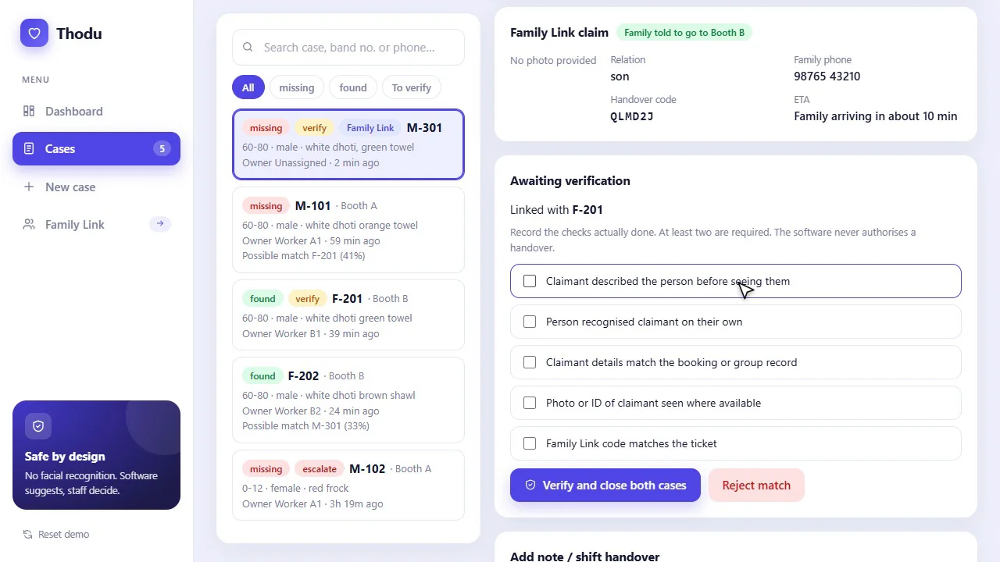
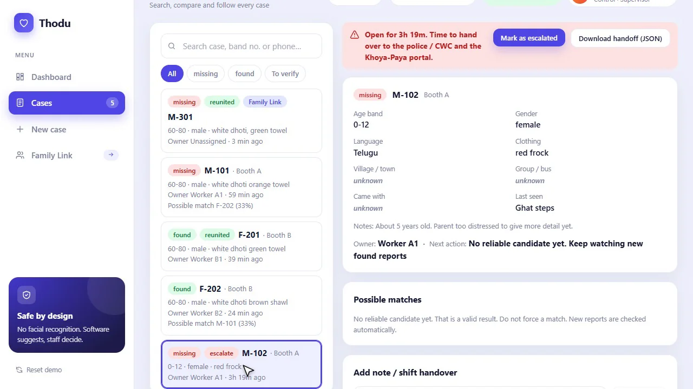
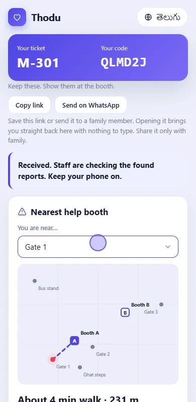
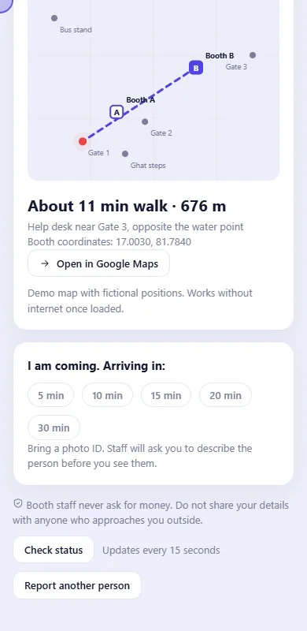

Thodu
A staff-assisted tool for reuniting people separated at mass gatherings. Software suggests, staff decide, and nobody's photo is ever put on public display.

Watch it work
Press play, or jump to a chapter.
The narrated walkthrough, recorded from the running prototype. It uses fictional data only. Turn the sound on for the voice-over.
Chapters
The problem
At a huge gathering, a separated child or elder rarely has a phone, while the searching relative usually does. Booths need to compare what different families and booths know, quickly, without publishing photos of vulnerable people.
What I built
A case desk for staff with candidate comparison and a supervisor-only verification step, plus a private Family Link page for the searching relative.
What it does
Case desk
Open missing and found cases, with lookup by case ID, wristband number or family phone.
Candidate comparison
Each field shows agree, conflict or unknown. Weak matches are hidden, so "no reliable candidate" is a valid answer.
Next question
Suggested questions in English and Telugu, with "interpreter needed" options.
Safe verification
Workers propose. Only a supervisor can verify, after two checks.
Family Link
A private, phone-first page: file a claim, get a ticket, and see a route only after staff judge a plausible match.
Escalation timer
Open cases pass a three-hour mark and can be exported as a handoff file.
Zone board
Joins a crowd-level feed with open cases per zone. Rule-based, and a human decides.
Offline-tolerant
Changes queue on the device and sync when the connection returns.
How the pieces fit
The dashes show the direction of data flow.
Staff flow
Family flow
Escalation
Real screens
Tap any screenshot to enlarge it. All data shown is invented.






Choices that matter
No public photo gallery
Photos of lost children and elders are sensitive. Family Link is claim-first and private.
Staff decide, software suggests
Matches are proposals. The interface can say there is no reliable candidate.
Roles enforced on the server
Who did something comes from the session, never from the browser.
Family codes stay out of URLs
A fragment that never reaches a server, a header for the code, and a 15-minute pause after five wrong tries.
Secure staff sign-in
Passwords hashed with scrypt, server-side sessions, lockout, and offline copies wiped on sign-out.
Integrate, do not compete
It accepts a crowd feed through a documented API instead of counting crowds from video.
Where it stands
I would rather be precise than impressive.
Built
- Working prototype with a documented REST API
- Staff sign-in, roles, escalation timer and Family Link
- Demo recorded from the running app, with fictional data only
In progress / verified by
- Telugu strings are a first draft that needs native-speaker review
Honest limits
- No real database, account admin screen, accessibility review or field testing yet
- The legal position on children's data and photos needs a proper legal check